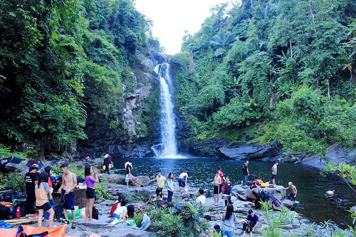

welcome to DA NANG
I.Giếng Trời
Giếng Trời là địa điểm du lịch Đà Nẵng mà tất cả các phượt thủ đều ao ước được một lần khám phá. Nằm ẩn mình giữa khu rừng nguyên sinh rộng lớn là thác nước trắng xóa chảy từ thượng nguồn đẹp mắt. Đến đây du khách có thể đắm mình trong khung cảnh thiên nhiên tươi đẹp, cắm trại, leo núi, trekking, cùng nhiều hoạt động thú vị khác.

II.Đỉnh Bàn Cờ
Địa điểm du lịch Đà Nẵng Đỉnh Bàn Cờ được mệnh danh là ‘chốn bồng lai’ nơi hạ giới. Đến đây, du khách có thể ngắm trọn vẹn thành phố từ trên cao: dòng sông Hàn với những cây cầu bắc ngang, những ngôi nhà chọc trời, hay mặt biển xanh êm ả,.. Đặc biệt, cắm trại qua đêm để ngắm bình minh hoặc mặt trời lặn là những trải nghiệm thú vị nhất định không thể bỏ qua khi đến đây.

III.Hội An
Thành phố Hội An nằm bên bờ bắc hạ lưu sông Thu Bồn. Hội An là một đô thị cổ của Việt Nam, cách Hà Nội 795 km về phía Nam, cách Thành phố Hồ Chí Minh 940 km, cách Huế 122 km, cách thành phố Đà Nẵng 30 km về phía đông nam
IV.Rừng Dừa Bảy Mẫu
Rừng dừa Bảy Mẫu là điểm check-in Đà Nẵng - Hội An hấp dẫn. Nơi đây dành cho những ai yêu thích cảnh sông nước miền Tây. Ngồi trên những chiếc thuyền thúng quen thuộc của người miền Trung để tham quan rừng dừa, len lỏi vào từng gốc dừa, giăng lưới đánh cá, đua thúng ... là những hoạt động vô cùng thú vị.
V.Làng Nghề Nước Mắm Nam Ô
Làng nghề nước mắm Nam Ô là làng nghề nước mắm truyền thống nằm dưới chân đèo Hải Vân. Làng nghề đã tồn tại hàng trăm năm và được công nhận là Di sản Văn hóa Phi Vật Thể Quốc gia. Với đường bờ biển dài, đẹp như tranh, nơi đây thu hút du khách đến tham quan, tìm hiểu, trải nghiệm hoạt động làm mắm của người dân. Ngoài ra, những món ngon nơi đây như nước mắm, gỏi cá trích, cháo chờ cũng khiến nhiều du khách say mê.
VI.Làng Cổ Phong Nam
Chỉ cách trung tâm thành phố tầm 10km, nhưng làng cổ Nam Phong dường như tách khỏi các không khí ồn ào, náo nhiệt của phố phường. Địa điểm du lịch tại Đà Nẵng Làng cổ Nam Phong mang nét cổ kính, mộc mạc gợi lại không khí làng quê miền Trung xưa. Những rặng tre xanh, giếng nước, mái đình, chiếc cổng làng phủ rêu phong cùng cánh đồng lúa xanh bát ngát,... tất cả làm nên một làng quê cổ yên bình thu hút du khách đến tìm hiểu, khám phá.

Mọi thắc mắc xin liên hệ tại đây